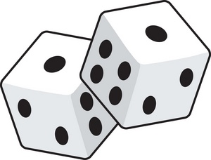

9 Power & diagnosis
10.1 Outline
10.1.1 Overview
- Tests review
- \(p\) values and significance
- Power
- Sources of power
10.2 Tests
10.2.1 Classical testing
In the classical approach we ask:
How likely are we to see data like this if the hypothesis is true?
- If the answer is “not very likely”, we treat the hypothesis as suspect.
- Otherwise we maintain it (not quite “accept” — we may maintain incompatible hypotheses).
How unlikely is “not very likely”?
10.2.2 Weighing evidence
Before testing, decide what evidence would convince you the hypothesis is unreliable.
Othello believes Desdemona is innocent. Iago offers evidence:
- Would she look at Cassio like that if innocent?
- Would she defend him like that?
- Would Cassio have her handkerchief?
Othello: the chance of all this if she were innocent is surely below 5%.
10.3 Power
10.3.1 What is power?
Power is the probability of rejecting a hypothesis.
It presupposes:
- a well-defined hypothesis
- a stipulation of how the world actually works
- a procedure for producing results and deciding significance
10.3.2 Dice: one roll
Hypothesis: a six never comes up on this die.
Test:
- Roll once.
- Reject if a six appears.
What is the power of this test?

10.3.3 Dice: two rolls
Same hypothesis — but roll twice.
Reject if a six appears either time.
What is the power of this test?
10.3.4 Two probabilities
Power can seem harder because rejection involves a calculated probability — a probability of a probability.
Hypothesis: the die is fair.
- Roll 1000 times.
- Reject if fewer than \(x\) sixes or more than \(y\) sixes.
What should \(x\) and \(y\) be?
10.3.5 Step 1: rejection rule
Set a rejection rule based on events unlikely under the hypothesis.
Expected number of sixes if the die is fair is 166. What would be ‘unusually many’ 6s? What would be ‘unusually few’ 6s?
10.3.6 Rejection thresholds
143 or fewer is very few; 190 or more is very many:
c(lower = pbinom(143, 1000, 1 / 6), upper = 1 - pbinom(189, 1000, 1 / 6)) lower upper
0.02302647 0.02785689 10.3.7 Step 2: power
What is the power?
Now stipulate how the world really works — not the null you plan to reject.
Suppose sixes actually appear 20% of the time.
What is the probability of seeing at least 190 sixes?
1 - pbinom(189, 1000, .2)[1] 0.796066If sixes appear 20% of the time, you will likely see ≥ 190 sixes and reject “fair die.”
10.4 Interpretations
10.4.1 Rule of thumb
- 80% or 90% is a common rule of thumb for “sufficient” power.
- How much you need depends on the purpose.
10.4.2 Think about
- Are there other tests you could implement?
- Are there other ways to improve this test?
10.5 Power analytics
10.5.1 Back to experiments
- If we run an experiment we get an estimate \(b\)
- We form beliefs about a distribution of estimates \(b\) (sampling distribution)
- We also can think about the distribution of estimates we might get if there were no effect (the null distribution)
- Just like with the dice!
10.5.2 Simple intuition
If the sampling distribution is centered on \(b\) with standard error 1, what is the probability of a significant estimate?
- Below \(-1.96\): \(F(-1.96 \mid \tau)\)
- Above \(+1.96\): \(1 - F(1.96 \mid \tau)\)
Add them: probability above 1.96 or below \(-1.96\).
10.5.3 Power function
power <- function(b, alpha = 0.05, critical = qnorm(1 - alpha / 2)) {
1 - pnorm(critical, mean = abs(b)) + pnorm(-critical, mean = abs(b))
}power(0)[1] 0.05power(1.96)[1] 0.5000586power(-1.96)[1] 0.5000586power(3)[1] 0.850838810.5.4 Graph: effect 1.96
This is what pwrss::power.z.test does — with nice graphs.
If the true effect were 1.96, what would power be?
pwrss::power.z.test(
mean = 1.96, alpha = 0.05,
alternative = "two.sided", plot = TRUE, verbose = FALSE
)10.5.5 Graph: effect 1.96 (plot)

10.5.6 Graph: interpretation
Substantively: if an estimate is just significant on average, power is 50%.
10.5.7 Graph: effect 2.5
pwrss::power.z.test(
mean = 2.5, alpha = 0.05,
alternative = "two.sided", plot = TRUE, verbose = FALSE
)
10.5.8 Graph: effect 0
pwrss::power.z.test(
mean = 0, alpha = 0.05,
alternative = "two.sided", plot = TRUE, verbose = FALSE
)
10.6 Math and functions
10.6.1 Trial: standard error
Standard error depends on \(N\) and outcome variance \(\sigma\).
With \(N\) subjects in two equal groups:
\[Var(\tau)=\frac{\sigma^2}{N/2} + \frac{\sigma^2}{N/2} = 4\frac{\sigma^2}{N}\]
\[\sigma_\tau=\frac{2\sigma}{\sqrt{N}}\]
(Tests use an estimated standard error.)
10.6.2 Trial: with pwrss
Same idea with pwrss:
pwrss::pwrss.t.2means(
mu1 = .2, mu2 = .1, sd1 = 1, sd2 = 1, n2 = 50, alpha = 0.05,
alternative = "not equal", verbose = FALSE
)10.6.3 Cluster RCT
Mostly: figure out the standard error.
Cluster shock \(\epsilon_k\), individual shock \(\nu_i\) with variances \(\sigma^2_k\), \(\sigma^2_i\):
\[\sqrt{\frac{4\sigma^2_k}{K} + \frac{4\sigma^2_i}{nK}}\]
10.6.4 Design effect
With \(\rho = \frac{\sigma^2_k}{\sigma^2_k + \sigma^2_i}\):
\[\sqrt{((n - 1)\rho + 1)\frac{4\sigma^2}{nK}}\]
- \(((n - 1)\rho + 1)\) = design effect
- \(\frac{nK}{((n - 1)\rho + 1)}\) = effective sample size
Plug in and proceed as before.
10.7 Power via diagnosis
10.7.1 Design 1: complete randomization
# Simple
N <- 100
complete_design <-
declare_model(
N = N,
State = sample(1:4, N, replace = TRUE),
U = rnorm(N)/4,
Y0 = State + U,
Y1 = State + U + .2
) +
declare_inquiry(ate = mean(Y1 - Y0)) +
declare_assignment(
Z = complete_ra(N),
Y = Z*Y1 + (1-Z)*Y0
) +
declare_estimator(Y ~ Z, label = "complete")10.7.2 Design 2: cluster randomization
# Simple
N <- 100
clustered_design <-
declare_model(
N = N,
State = sample(1:4, N, replace = TRUE),
U = rnorm(N)/4,
Y0 = State + U,
Y1 = State + U + .2
) +
declare_inquiry(ate = mean(Y1 - Y0)) +
declare_assignment(
Z = cluster_ra(clusters = State),
Y = Z*Y1 + (1-Z)*Y0
) +
declare_estimator(Y ~ Z, clusters = State, label = "clustered")10.7.3 Design 3: blocked randomization
# Simple
N <- 100
blocked_design <-
declare_model(
N = N,
State = sample(1:4, N, replace = TRUE),
U = rnorm(N)/4,
Y0 = State + U,
Y1 = State + U + .2
) +
declare_inquiry(ate = mean(Y1 - Y0)) +
declare_assignment(
Z = block_ra(blocks = State),
Y = Z*Y1 + (1-Z)*Y0
) +
declare_estimator(Y ~ Z + State, label = "blocked")10.7.4 Design diagnosis
Design diagnosis is arbitrarily flexible.
diagnoses <- diagnose_designs(
complete_design, clustered_design, blocked_design,
sims = 500)10.7.5 Distribution of \(p\)-values

10.7.6 diagnose_design()
| Design | Mean Estimate | Bias | SD Estimate | RMSE | Power | Coverage |
|---|---|---|---|---|---|---|
| complete_design | 0.19 | -0.01 | 0.23 | 0.23 | 0.13 | 0.94 |
| (0.01) | (0.01) | (0.01) | (0.01) | (0.01) | (0.01) | |
| clustered_design | 0.19 | -0.01 | 1.35 | 1.34 | 0.00 | 1.00 |
| (0.06) | (0.06) | (0.02) | (0.02) | (0.00) | (0.00) | |
| blocked_design | 0.20 | 0.00 | 0.05 | 0.05 | 0.99 | 0.95 |
| (0.00) | (0.00) | (0.00) | (0.00) | (0.01) | (0.01) |
10.7.7 Distribution of estimates

10.7.8 Varying assignment and \(N\)
diagnosis <-
list(redesign(complete_design, N = 100),
redesign(complete_design, N = 200),
redesign(complete_design, N = 600),
redesign(clustered_design, N = 100),
redesign(clustered_design, N = 200),
redesign(clustered_design, N = 600),
redesign(blocked_design, N = 100),
redesign(blocked_design, N = 200),
redesign(blocked_design, N = 600)) |>
diagnose_design(sims = 500)10.7.9 Power over \(N\) and strategy

10.7.10 Big takeaways
- Power depends on sample size, variability, effect size — and data and analysis strategies.
- Estimate power under multiple scenarios.
- Use the same code for power as for your final analysis.
- If you can declare a design and have a test, you can calculate power.
10.7.11 Big takeaways (2)
- Power can be right but misleading. For confidence:
- check bias and coverage, not just power
- check power especially under the null
- Don’t let power distract from more substantive diagnosands.